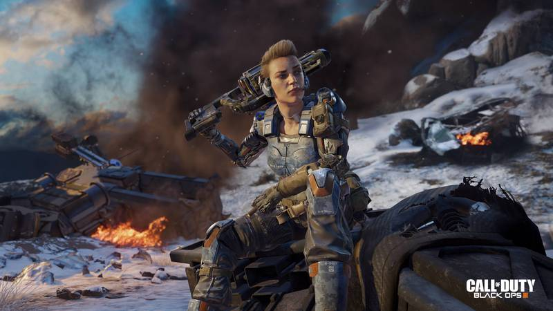
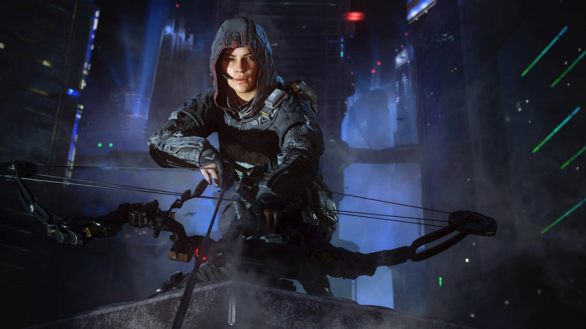
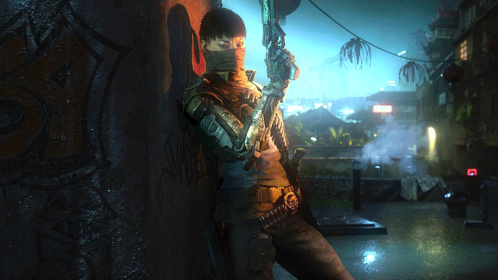
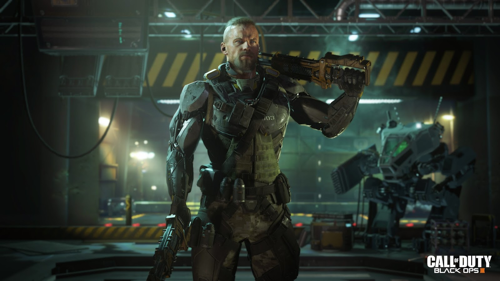
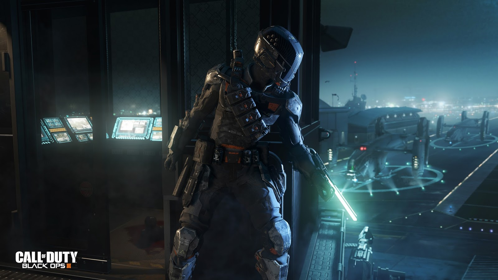
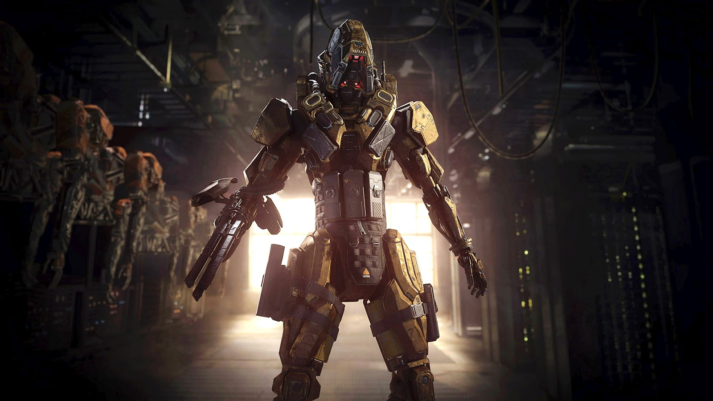

-
Selecione um Personagem
     
BATTERY
"A única filha e caçula de cinco irmãos, Erin "Battery" Baker
sempre teve que lutar para conseguir o que queria. Seguindo uma
tradição familiar de mais de 100 anos de serviço militar, e
assistindo seus irmãos entrarem um a um no Exército dos Estados
Unidos, ela finalmente se formou no ensino médio e se matriculou
por conta própria. Impulsionada a se destacar por sua contínua
rivalidade com seus irmãos, ela se voluntariou para a Escola de
Paraquedismo, antes de passar no Programa de Avaliação e Seleção
dos Rangers. Pesadamente armada, ela opera sem medo à frente das
linhas de frente, atravessando agilmente ambientes urbanos,
enquanto destrói HVTs com salvas de munições avançadas de alto
explosivo."
Marcas:
Braço cibernético esquerdo e Antebraço cibernético direito
Equipamento:
Armadura Cinética (Black Ops III)
"Como órfã nas ruas da favela da Rocinha, no Rio de Janeiro,
Alessandra "Outrider" Castillo sobreviveu graças ao seu olhar
atento e inteligência aguçada. Recebendo uma educação em uma das
missões internacionais da cidade, ela passava seu tempo livre
atravessando de telhado em telhado, observando as pessoas se
movendo nas ruas abaixo, percebendo padrões e aprendendo a
prever seus movimentos. Ao se alistar no Exército Brasileiro aos
18 anos, sua agilidade e habilidades de observação rapidamente
lhe renderam um lugar na 'Bda Op Esp', as Forças Especiais.
Agora, como batedora avançada, ela persegue o campo de batalha,
rastreando sua presa antes de destruí-la com precisão letal."
Marcas:
Casaco com capuz e luvas de arco e flecha
Equipamento:
Visão Pulso (Black Ops III)
"Filha única de um temido oficial dos 54 Imortais, He Zhen-Zhen
foi criada nas fileiras da organização criminosa dominante da
Zona de Quarentena de Singapura. Ela se mostrou uma aluna
excelente e dedicada, aprendendo as tradições e a linhagem
honrada da organização enquanto perseguia o treinamento marcial
com uma determinação singular. Ela trabalhou duro para não
decepcionar seu pai ou a liderança da organização. Aos 17 anos,
foi elevada ao posto de Executora, uma das poucas que policiam a
organização internamente enquanto executam impiedosamente a
vontade dos 54I onde e quando for necessário."
Marcas:
Braço direito cybernetico e bandana no rosto
Equipamento:
Foco de Combate (Black Ops III)
"Nascido em uma família militar e criado em um bairro difícil,
Donnie Walsh cresceu destemido e obstinado. Ingressando no
exército logo após o ensino médio, Walsh é um soldado de
infantaria em todos os sentidos; o campo de batalha se tornou
sua segunda casa. Ele é desconfiado de operações secretas e de
qualquer coisa que opere fora da cadeia de comando estabelecida,
vendo-as como desonrosas. Ele prefere uma luta justa e direta, e
sabe que nunca há substituto para boas botas no chão. Agora,
ciberneticamente aprimorado, ele usa suas habilidades únicas
para se lançar de cabeça na batalha, enfrentando seus inimigos
com pura e avassaladora força bruta!"
Marcas:
Tatuagens, Moicano
Equipamento:
Overdrive (Black Ops III)
"Quase nada se sabe sobre o suposto especialista em operações
clandestinas, Spectre. A designação em si é um codinome acordado
pelas várias agências que reuniram suas inteligências sobre
assassinatos não resolvidos, inferindo sua existência com base
em evidências encontradas na cena do crime ou em relatos
fragmentados dados por testemunhas abaladas. Apesar das pesadas
redações, todos os relatos sugerem um indivíduo capaz de uma
furtividade extraordinária, capaz de evadir ou neutralizar os
mais sofisticados sistemas de segurança, sejam eles operados por
humanos ou automatizados. Em todos os casos, as vítimas de
Spectre foram 'tratadas' com ferimentos cirúrgicos precisos na
linha média, raramente apresentando sinais de luta."
Marcas:
Roupas e capacete futurista
Equipamento:
Camuflagem ativa (Black Ops III)
"The product of a cutting-edge military R&D project to
supplement Special Operations soldiers in the field,
Experimental War Robot-115 was one of a single unit of advanced
prototype combat robots running the most sophisticated AI
software ever seen. After several politically embarrassing
mishaps and budget overruns, the project was cancelled and most
of the prototypes were stripped for parts. Fate had other plans
for EWR-115, when years later it was discovered to have been
stolen. Reports of sightings of the terrible machine on
battlefields around the world began to surface. No one knows why
it fights or who, if anyone, is issuing its orders."
Marcas:
Robo
Equipamento:
Psicose (Black Ops III)